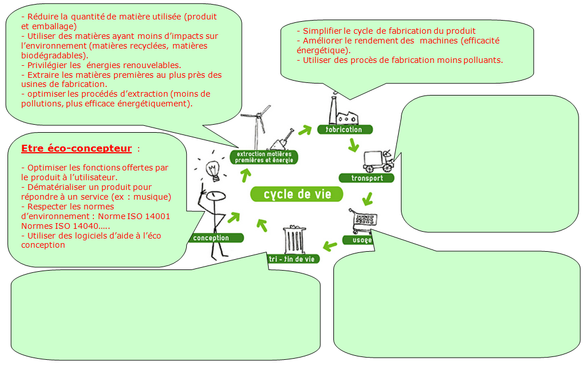
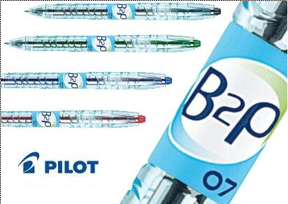

préalablement, cliquer pour visualiser le film
Lire ensuite "développement durable et écoconception", puis répondre aux questions suivantes:
A.1. Donner la définition de l’acronyme "GES".
A.2 : Donner une définition du « Développement Durable ».
A.3 : Donner une définition de « L’Eco conception ».
A.4 : Donner le fil conducteur à toutes les démarches d’éco conception.
A.5 : Compléter le dessin ci dessous en indiquant comment on peut jouer sur chaque étape du cycle de vie d'un produit pour limiter son impact écologique.
voir les items "Valorisation des plastiques" et "Valorisation des métaux" , puis vous aider.

Visualiser le film « bouteilles recyclées en stylo » 
A.6. Expliquer pourquoi l'entreprise"Pilot" a choisi le sigle "B2p" pour nommer son stylo.
A.7. Indiquer combien de stylos on fabrique avec une bouteille.
A.8. Indiquer le pourcentage de plastique recyclé dans un stylo.
A.9. Indiquer combien en 15 ans, on a « économisé » de barils de pétrole et quel a été le bénéfice pour les émissions de CO2:
Created with the Personal Edition of HelpNDoc: Full-featured EBook editor